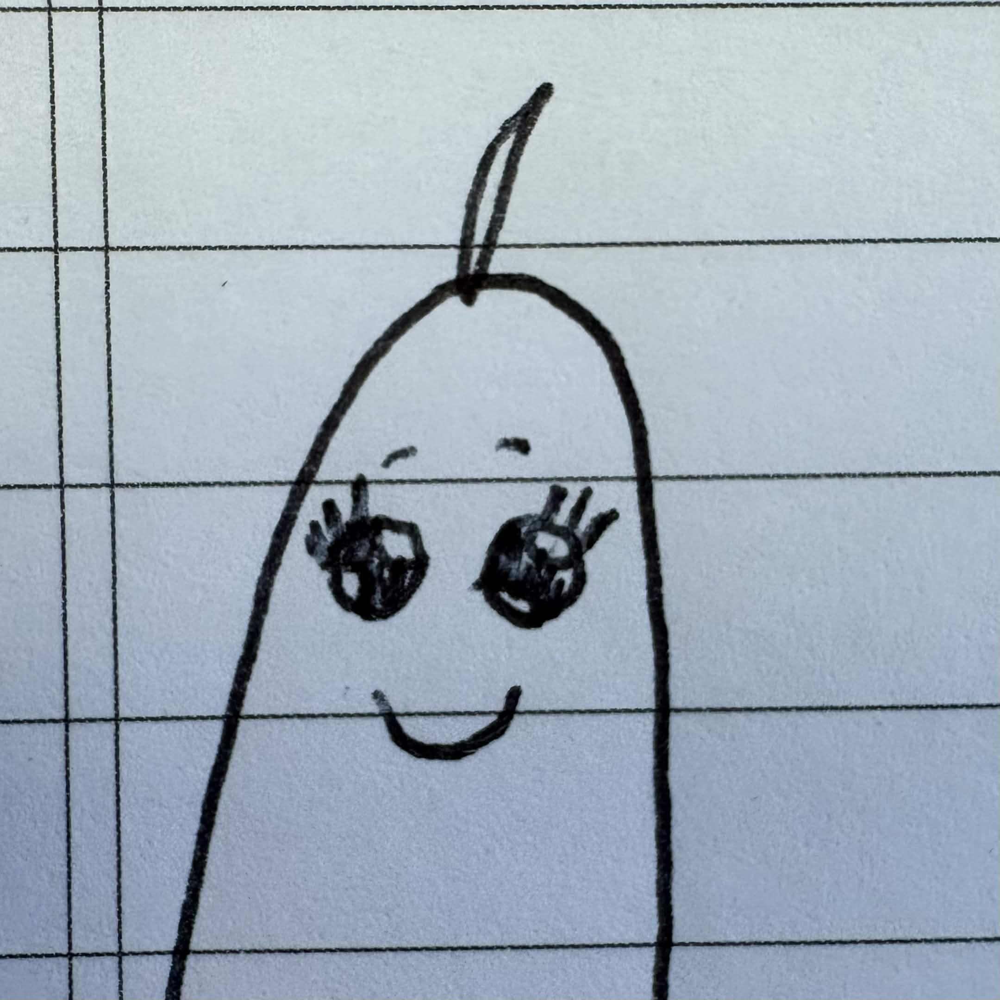

DDfunassyi
Member since January 3, 2026
Biography
DDfunassyi is an artist hailing from the US, deeply rooted in the very origins of RAINOUT.
They were first introduced to the project during its inception—right when founders Jori, V0CALYST, and angelfriend originally came together to form the collective. Although they were around to witness the foundation being built, DDfunassyi officially joined the roster later on to cement their place in the group. She is known to do cover artwork for "one of one" by V0CALYST and his EP, "7 deadly sins."